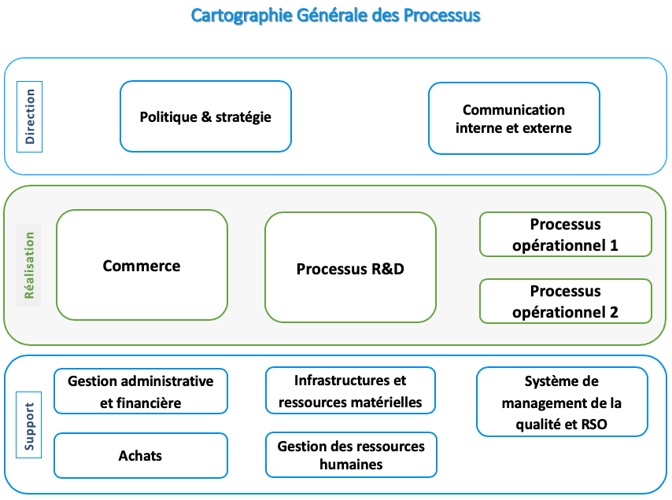
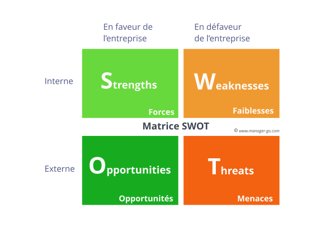

Étude de cas CFP
- processus
- systeme information
- Eugénie Giraud-Telme
J'avais très envie d'essayer la modélisation de processus.
Pour ce MON, je m'inscris dans la continuité de Sarah qui a effectué ce MON en premier. J'utiliserai les ressources qu'elle propose pour mener à bien l'exercice. Si je trouve de nouvelle ressources pertinentes, je les ajouterai ici.
Énoncé
Contexte
Un Centre de Formation Professionnelle remarque des lacunes dans son Système d'Information et fait appel à des consultants pour analyser le SI et proposer des solutions pour une refonte.
Documents à disposition
A notre disposition pour répondre au problème, nous avons un résumé de l'organisation de l'entreprise et deux entretiens.
Questions
I. Quelle est la finalité de la mission engagée par le dirigeant?
II. Quelles sont les attentes stratégiques de l’entreprise?
III. Réalisez une cartographie des acteurs.
IV. Réalisez une cartographie des processus.
V. Réalisez un modèle de processus BPMN pour chaque processus identifié dans la cartographie.
VI. Relevez les dysfonctionnements par rapport à chaque processus.
VII. Établir à l’aide d’une matrice SWOT les forces, les faiblesses de l’organisation et du SI actuels ainsi que
les opportunités et les risques d’un futur SI ?
VIII. Quels seraient les objectifs d’un futur SI et quels seraient les indicateurs associés?
IX. Donner un aperçu des besoins et des priorités du futur SI.
Déroulement
Pour répondre aux deux premières questions, il n'y a besoin que du premier texte et de la première interview.
Pour la question III, j'ai fait un schéma avec les grands blocs d'acteurs et les différentes intéractions entre ces blocs et au sein des blocs. J'ai détaillé assez finement ces intéractions.
Pour la question IV, au lieu de faire une liste des processus, j'ai fait un schéma pour classer les processus selon ce principe :

Source : https://www.certification-qse.com/fiche-processus-lapproche-processus/
Pour la question V, j'ai utilisé le logiciel edrawsoft proposé par Sarah. J'ai utilisé la version d'essai mais j'ai évité d'enregistrer mes diagrammes BPMN pour ne pas dépasser la limite autorisée sans payer : j'ai fait des captures d'écran des diagrammes. L'utilisation du logiciel est assez simple : il suffit d'ouvrir un diagramme vide, puis de trouver la bonne bibliothèque (c'est indiqué BPMN) et de faire glisser les éléments dont on a besoin au fur et à mesure.
Pour la question VI, je me suis basée sur les diagrammes BPMN et sur les différentes interviews.
Pour la question VII, j'ai utilisé ce diagramme :

Pour les deux dernières questions, j'ai partagé ce que j'imaginais à propos du futur SI.